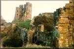

Castles of Scotland
Do you like castles? The Castles of Scotland Tour is for you. The tour visits 15 differents castles in central and northern Scotland. The tour starts with the famous Edinburgh Castle, and Travel Scotland! has a special arrangement to visit parts of the castle normally closed to the public.
From Edinburgh you travel to Stirling Castle with breathtaking views of the River Forth as it divides Scotland's Highlands and Lowlands. Inverness is next on the Itinerary with a side trip to Culloden to view where the campaign of Bonnie Prince Charlie came to an end.
Look for Nessie from Castle Urquhart on the banks of Loch Ness. From there goes into the heart of the Highlands with trips to Fort William and Oban. We've made special plans to picnic by Castle Stalker near Glencoe.
No castle tour would be complete with a trip to Balmacara Castle on the Isle of Skye. While on Skye, we'll have a boat trip along the feet of the Black Cullins.
The tour concludes with two days back in Edinburgh for shopping, additional site-seeing, or just rest and relaxation.